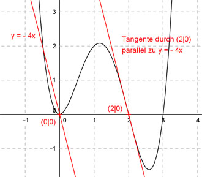

Aufgabe 102 Der Graph einer ganzrationalen Funktion 4. Grades hat bei (0|0) einen Extremwert und bei (2|0) einen Wendepunkt mit einer zur Geraden y = -4x parallelen Tangente. Wie lautet seine Funktionsgleichung?  Allgemeine Form einer ganzrationalen Funktion 4. Grades: f(x) = ax4 + bx3 + cx2 + dx + e f’(x) = 4ax3 + 3bx2 + 2cx + d f’’(x) = 12ax2 + 6bx + 2c 5 Bedingungen: 1. Hat bei (0|0) einen Extremwert bedeutet zum einen: f(0) = 0 --> a * 04 + b * 03 + c * 02 + d * 0 + e = 0 --> e = 0 2. Hat bei (0|0) einen Extremwert bedeutet zum anderen: f’(0) = 0 --> 4a * 03 + 3b * 02 + 2c * 0 + d = 0 --> d = 0 3. Hat bei (2|0) einen Wendepunkt bedeutet zum einen: (d = 0 und e = 0 eingesetzt) f(2) = 0 --> a * 24 + b * 23 + c * 22 = 0 --> 16a + 8b + 4c = 0 I 4. Hat bei (2|0) einen Wendepunkt bedeutet zum anderen: f’’(2) = 0 --> 12a * 22 + 6b * 2 + 2c = 0 --> 48a + 12b + 2c = 0 II 5. Hat bei (2|0) einen Wendepunkt mit einer zur Geraden y = -4x parallelen Tangente bedeutet: (d = 0 eingesetzt) f’(2) = -4 --> 4a * 23 + 3b * 2² + 2c * 2 = -4 --> 32a + 12b + 4c = -4 III I * (-1) + III -16a - 8b - 4c = 0 32a + 12b + 4c = -4 --------------------- 16a + 4b = - 4 IV II * (-2) + III -96a - 24b - 4c = 0 32a + 12b + 4c = -4 --------------------- -64a - 12b = -4 V IV * 3 + V 48a + 12b = -12 -64a - 12b = -4 ----------------- -16a = - 16 |:(-16) a = 1 a = 1 in IV eingesetzt. 16 * 1 + 4b = -4 16 + 4b = -4 |-16 4b = -20 |:4 b = -5 a = 1 und b = -5 in I eingesetzt. 16 * 1 + 8 * (-5) + 4c = 0 16 - 40 + 4c = 0 -24 + 4c = 0 |+24 4c = 24 |:4 c = 6 Gesuchte Funktionsgleichung: f(x) = x4 - 5x3 + 6x2